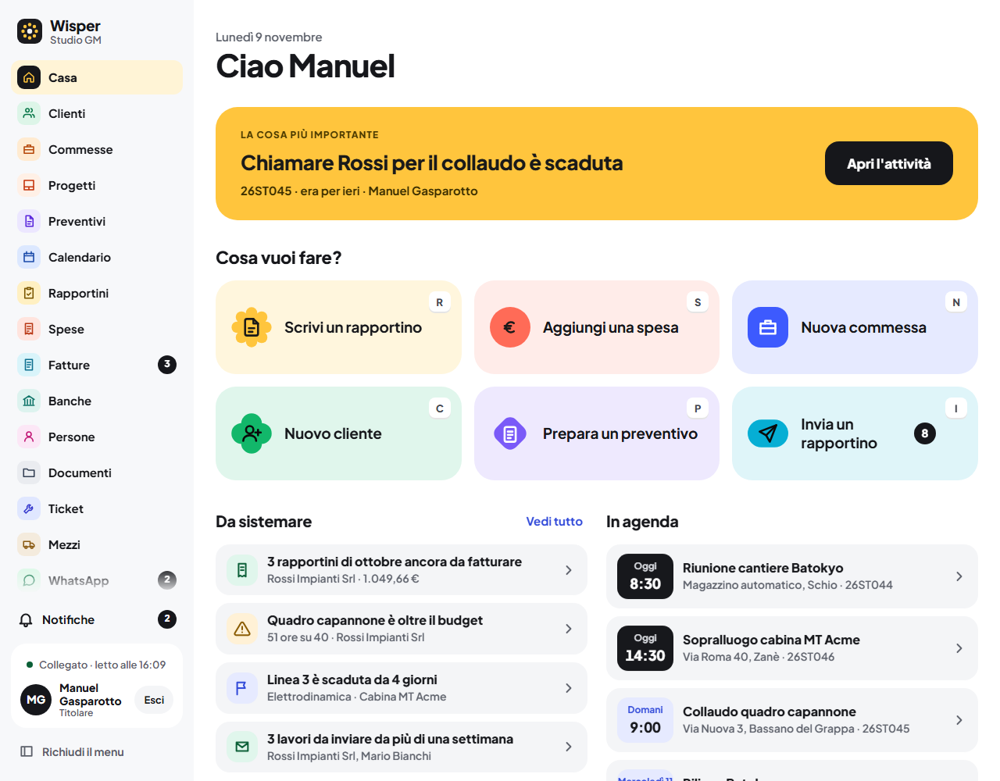
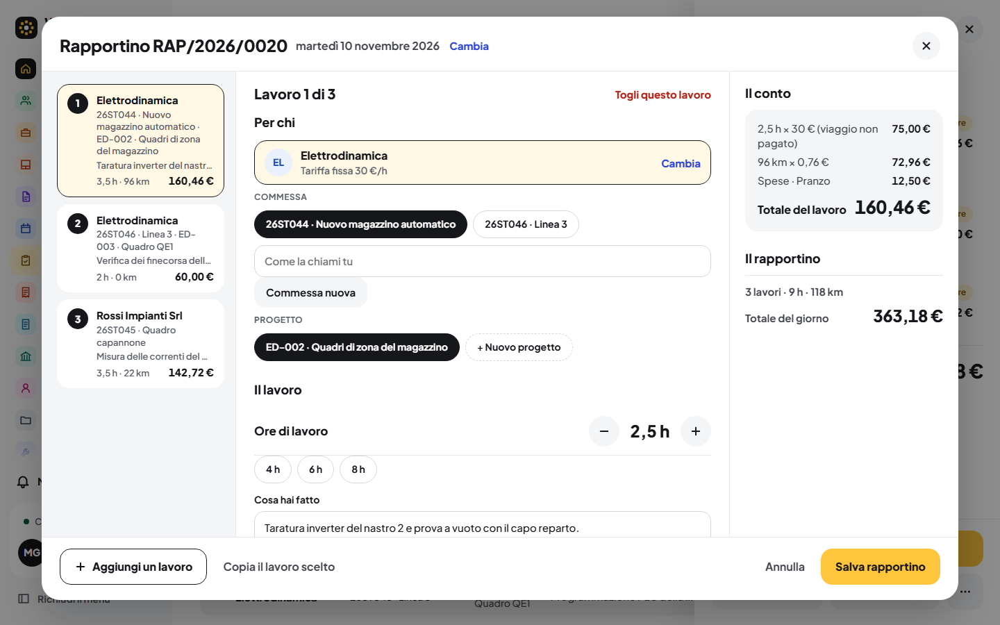
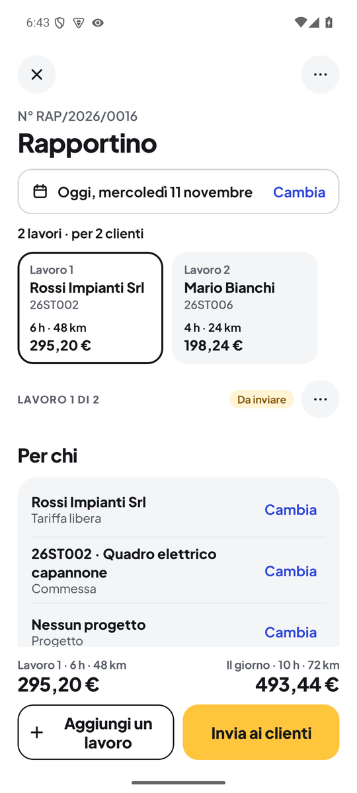
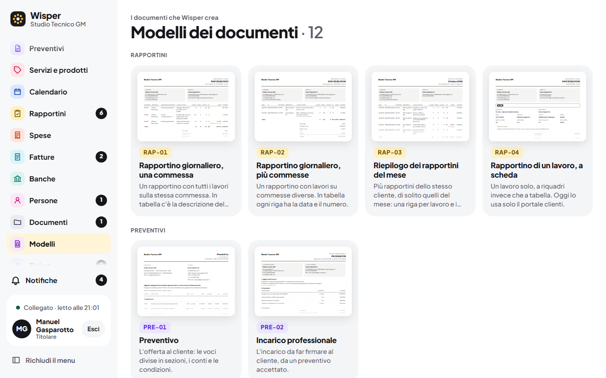
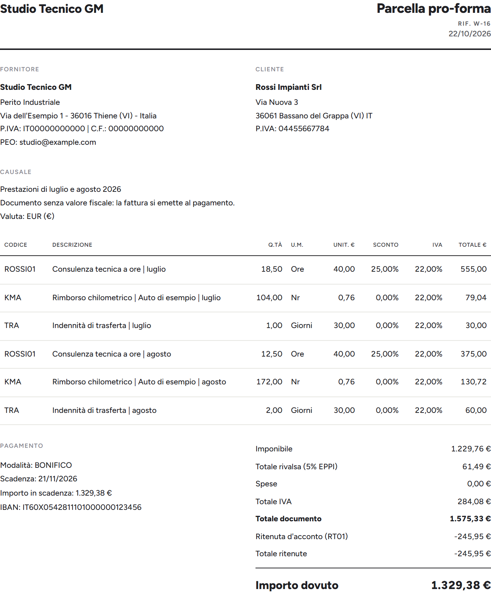

In daily use since 3 November 2026
The management system of a one-person technical studio: work reports, jobs, quotes, invoices and documents, on the phone at the client's and on the computer at the office.
See the source on GitHubAndroid app in Kotlin · Windows program · a small Node server at home · interface in Italian

My father is a self-employed industrial surveyor: electrical design and automation, a handful of clients, nobody else in the office. Every month he sends each client the list of the days he worked for them, then the invoice. He did it with a spreadsheet and by memory.
He wrote down what a complete system for his studio should do, eighteen modules, and Wisper grew into it phase by phase. It is built for one person, so everything a big suite needs for a team was cut or made optional: every module can be switched off.
He decides what it should do and tries it at work; I build it, and each version starts from something he said. The reasons are written down, version by version, in the diary (in Italian).
One report per day with several jobs inside, each with its client, job code, project, hours, kilometres and expenses. It is written on the phone, also with no signal: it waits in a queue and leaves when the connection is back.
Client, then jobs, then projects. A job has a budget in hours and a margin. Project codes are typed by hand the first times; then Wisper finds the pattern and proposes the next one.
The month's reports become the rows of a draft invoice, one row per service from the price list, with the Italian rules for a professional (pension fund, withholding tax, VAT). Wisper prepares the invoice; it is issued by the program he already uses.
Twelve document models, from the daily report to the fee note, each with its own code printed at the bottom of every page. The phone and the computer make the same PDF from the same template.
Expenses and mileage, deadlines and bank due dates, tickets and service contracts, a document archive, tasks and a calendar, people and vehicles.




server folder of the
repository and starts with example data in test mode; the
README
tells how the pieces fit together.
Wisper was born in August 2026 at NGN Hacks 2026 as a voice app: a technician said "Wisper", dictated the day's report and the row landed in the company spreadsheet, without touching the phone. The name and the ball of dots come from there.
After using it for a while my father was clear: leave the voice, let's do it by hand. In October 2026 the voice part was removed, all of it, and what he needed turned out to be everything that comes after the row. That first version is still in the repository's history.